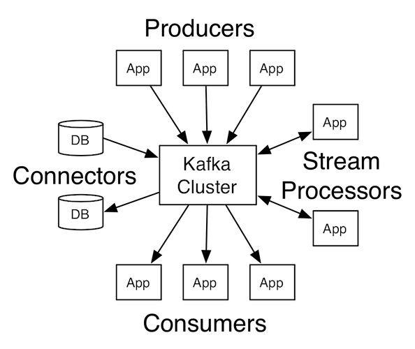
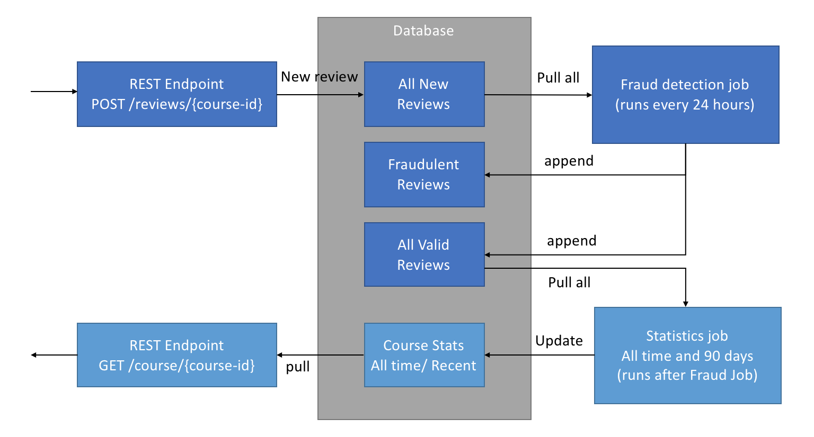
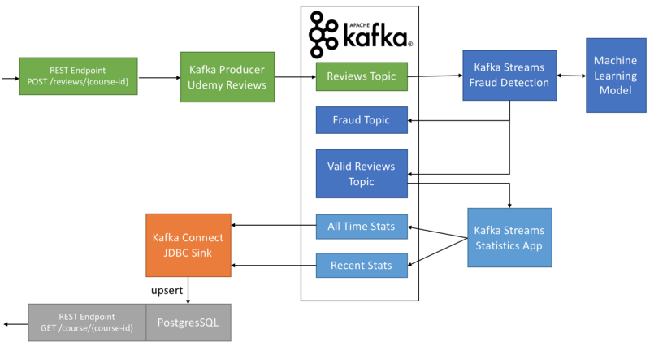
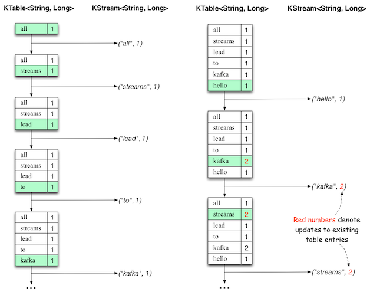

Big Data System Design: Data analyse
Roelant Ossewaarde / HU
Dag 6, 25 februari 2019
1 Streams
Een stream is een unbounded, continuous, real-time flow of records.
Voorbeelden:
- GPS-bewegingen van voertuigem.
- Financiële transacties.
- Web traffic op websites
- Tweets van twitter.
- IoT-devices (Alstom!).
- Spelersgedrag in games.
"You don't request data, it comes to you."
1.1 Waarom is dat anders?
Voor sommige inzichten geldt: de waarde (value) neemt af als het langer duurt tussen het verkrijgen van de data en het berekenen van het inzicht.
Bijvoorbeeld: de bewaking van condities met sensoren (temperatuur, hartbewaking, geofencing).
Bijvoorbeeld: het detecteren van keywords in chat-gesprekken.
Bijvoorbeeld: bewegingsdetectie in beveiligingscamera's.
1.2 Realtime data is lastig voor een "batch"-model.
Data komt binnen als een continue stroom events.
Batch-processing betekent: opslaan van events, dan de data collectie onderbreken voor analyse, en dat herhalen.
Real-time: data geanalyseerd als die binnenkomt.
1.3 Realtime processing van realtime data is sneller
Batch-processing betekent: data wordt opgespaard totdat die geanalyseerd kan worden. Spark moet een nieuwe job inplannen voor iedere minibatch.
Door realtime data te verwerken is de handeling-per-data eenvoudiger (want er is minder data dan in een batch) en daardoor eenvoudiger schaalbaar. "Kleinere unit-of-work".
1.4 Een stream is niet een message
Messages zijn berichten waarin de context er niet toe doet. Bij een stream is de context wel van belang: een stream kent een volgorde. Vergelijking: hartritme-verstoring (volgorde, stream) versus foutmelding (geen volgorde, message).
Omdat een stream een volgorde heeft, kun je streams opnieuw starten, terugdraaien, etc. Dat is zinvol als je data wil heranalyseren.
1.5 Een streams pipleine

1.6 Versus Apache Spark
Spark heeft micro-batches, waardoor near-realtime processing mogelijk is. Maar er is binnen Spark geen oplossing voor unbounded input.
Spark heeft geen inherente notie van "volgorde" of van "tijd" - geen replayablity. Dat moet met de hand toegevoegd worden door middel van bijvoorbeeld timestamps.
2 Streaming processors - Kafka Stream

2.1 Concepten van Apache Kafka:
- Een event (buiten de applicatie) genereert een record (de realtime data, binnen de applicatie). Een record is typisch een Key/Value-pair.
- De key/value zijn een topic en de data. Door middel van het topic wordt het type data aangegeven.
- Een record wordt bewaard door een broker. Ieder topic heeft zijn eigen partition.
- Een Publish-subscribe-pattern:
- Een producer genereert en stuurt (publishes) een record over een topic.
- Een consumer luistert (subscribes) naar een topic.
2.2 Topics en partitions

Een partition is een geordende, read-only reeks van records waar steeds nieuwe informatie aan wordt toegevoegd. Binnen elke partition worden records genummerd (de zgn. offset).
Een partition past op één machine. Maar een serie partities kan horizontaal schalen over verschillende systemen.
2.3 Partitions hebben consumers en producers

2.4 Consumers zijn georganiseerd in consumer groups

NB: Kafka kan records verspreiden als in een queue of als in een publish-subscribe pattern (zie vergelijking).
2.5 Voorbeeld (abstract)
2.6 Voorbeeld: fraude-detectie van reviews, batch.
 (bron)
2.7 Voorbeeld: fraude-detectie van reviews, streaming.

(bron)
2.8 Voorbeeld-applicatie van Kafka (mbv Kafka Streams)

(bron)
2.9 De analyse van data gebeurt soms op basis van eeen window
De data is dan opgespaard over een bepaalde tijd (x minuten) of een bepaalde hoeveelheid data (x events).
Er zijn verschillende typen windows:
- Sliding window: het window "beweegt" steeds maar een deel van de window-breedte. Bijvoorbeeld voor het berekenen van Moving Averages.
- Tumbling window: Het window "beweegt" zodat er geen overlap is tussen windows.
- Session window: Het window staat steeds om data heen die bij elkaar horen.
2.10 The latest and greatest
Er zijn onlangs implementaties verschenen waarmee je SQL-achtige statements kunt gebruiken om streaming data mee te bevragen. Zie bijvoorbeeld deze video voor een technische uitleg daarvan.
Als stream processor wordt tegenwoordig vaak Apache Flink gebruikt. Dat is dus het framework dat de consumer en producer API's (van bijvoorbeeld Kafka) aan elkaar knoopt. Flink is een gedistribueerd framework.
3 HDFS
Traditioneel: storage is een aparte component in het systeem, gescheiden van compute; tegenwoordig wordt storage vaak geïmplementeerd als bijvoorbeeld Netword Attached Storage (NAS) of Storage Area Networks (SAN). Dataverwerking volgt in zulke systemen steeds dezelfde stappen: haal input data uit store; plaats data in geheugen; verwerk data; schrijf data weg.
Bij groei van storage moet ook compute groeien; en dus ook de verbinding tussen die twee. Probleem is dat de kosten van verbindingen niet-lineair stijgen: 10 x zo veel bandbreedte is meer dan 10 x zo duur. Bovendien zijn eisen aan opslag tegewoordig anders dan de eisen waarmee traditionele filesystems zijn geb
De oplossing die Google bedacht: het Google File System (GFS). Het motto is om storage en compute niet meer te scheiden, zoals in de Von Neumann architectuur: ``breng compute naar data, niet andersom''. Hadoop Distributed File System is een open source implementatie van GFS.
3.0.1 Andere architectuur, ander filesysteem
Zo'n modernere architectuur stelt ook andere eisen aan de organisatie van de opslag. Design principes van traditionele filesystemen vs. GFS:
| traditioneel | GFS | |
|---|---|---|
| component failures zijn | excepties | de norm |
| geoptimaliseerd voor | files < 100 Mb | files > 100 Mb |
| datamutatie en lezen vooral | random | sequential |
| # clients | minder | veel |
| belangrijk qua snelheid | latency | bandbreedte |
3.0.2 Bewerkingen via HDFS